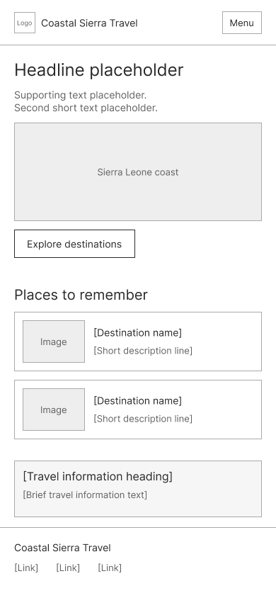
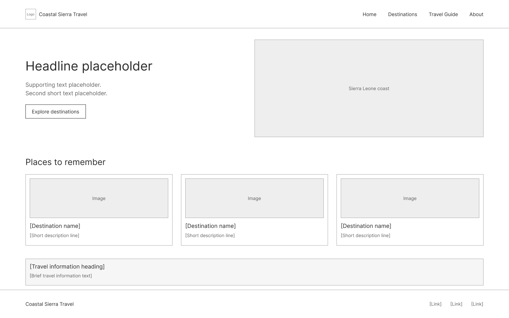

Site Name
Coastal Sierra Travel
I chose this name because it reflects the country’s Atlantic coast, local travel experiences, and the warm welcome visitors can expect.
WDD 131 · Website planning document
A welcoming guide to the beauty, culture, and adventure of Sierra Leone.
01 · Project overview
Coastal Sierra Travel
I chose this name because it reflects the country’s Atlantic coast, local travel experiences, and the warm welcome visitors can expect.
The purpose of this website is to help people learn about Sierra Leone, discover top attractions, and plan trips with useful information about weather, culture, and local highlights.
02 · Who the site serves
The site is for curious first-time visitors, families planning a holiday, and Sierra Leoneans who want to share local places and experiences.
03 · Project organization
Use descriptive, lowercase names with hyphens between words. Keep file extensions lowercase and use the appropriate extension for each file type.
project/siteplan.html — HTML page names use lowercase and the .html extension.project/siteplan.css — stylesheet names use lowercase and the .css extension.project/images/coastal-sierra-travel-mobile-wireframe.png and project/images/coastal-sierra-travel-desktop-wireframe.png — image filenames use lowercase kebab-case and the .png extension.images/ — shared image assets for the final website.styles/ — reusable site styling for other pages.scripts/ — JavaScript files for interactivity and date updates.04 · Visual identity
The green, white, and blue are drawn from Sierra Leone’s flag. Green highlights nature and destinations, blue is used for travel links and ocean accents, and white keeps the page bright and easy to read. Soft green and blue tints support the three flag colors without competing with them.
Explore Sierra Leone
Used for page titles, section headings, and important labels.
Find a place to begin your journey.
Used for paragraphs, lists, and general content readability.
05 · Layout planning
The responsive home page moves from a compact, single-column mobile layout to a wider desktop layout with a two-column hero and destination cards.

